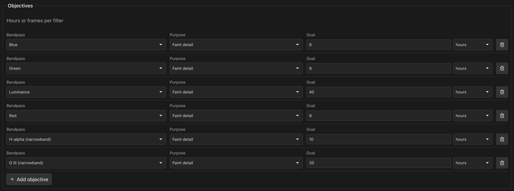
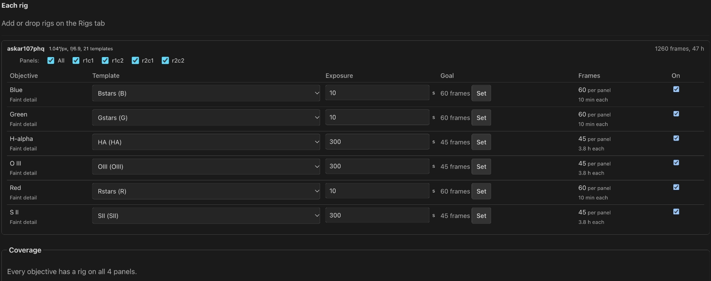
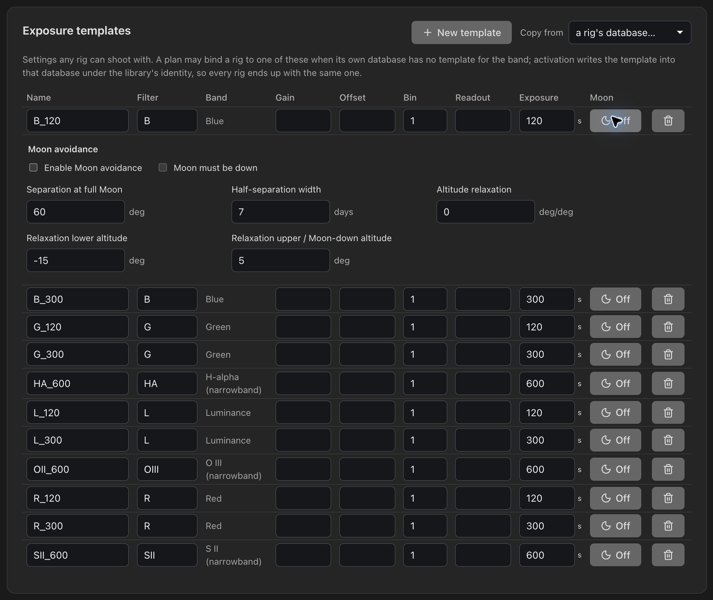
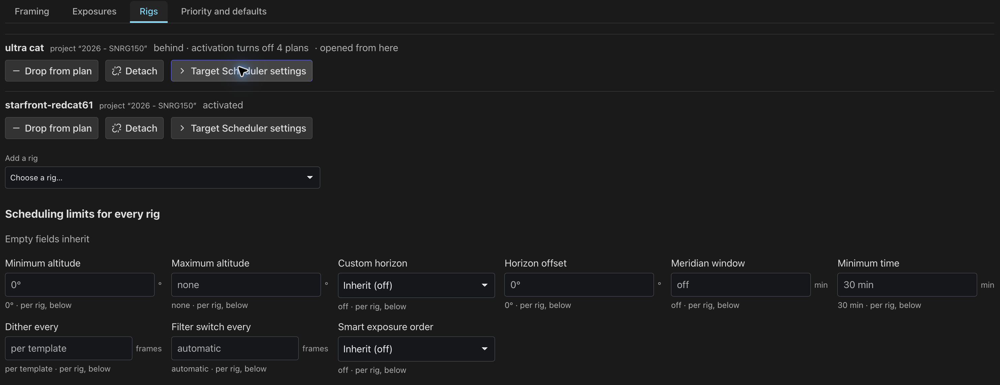
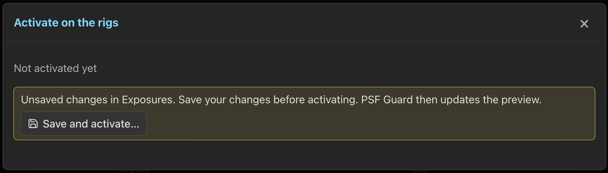
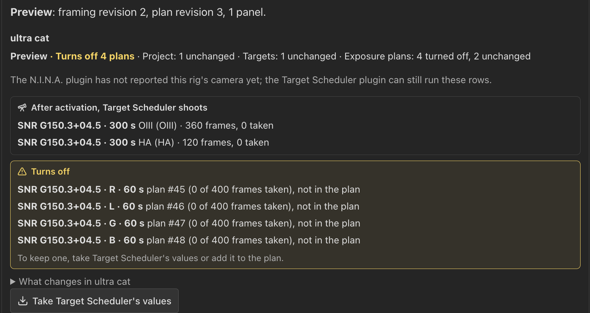

Exposures & Activation
Set goals per filter, choose how each rig shoots them, and write the plan into each rig's Target Scheduler database. Activation previews every row before it writes, and never touches captured frames or grades.
Set goals per filter
Use the Exposures tab to set capture goals. An objective is one bandpass and purpose (Faint detail or Unsaturated stars) with a goal in accepted hours or accepted frames. For each rig in the plan, it shows the template, exposure length and frames that meet the goal, and the rig's progress.

- Hours become frames per rig through that rig's exposure length, so a fast rig under bright skies shoots more short frames than a slow rig under dark skies for the same goal.
- Switching a goal between hours and frames converts the number: 6 h at 300 s becomes 72 frames and back.
- For each rig, PSF Guard selects the first template whose filter matches the
band. Filter names map to bands:
L,LumandClearare luminance;Ha,H-alphaandHa 3nmare H-alpha;OIIIandO3are OIII. - The exposure is the template's default, both when the rig joins and when you pick another template. When a database template's default is under a second, the rig's exposure for the band stands in, set by its optics and sky: 120 s broadband and 300 s narrowband at f/5 under Bortle 4 to 5, longer for slower optics and darker skies.
- If a rig has no template for a band, PSF Guard skips that band for the rig and shows the reason.
Progress and status
Each rig's table has a Progress and a Status column:
- Progress counts accepted frames against what the rig's Target Scheduler exposure plans ask for, with a bar, and the frames taken and rejected beneath. Rejects removed from the catalog still count as rejected.
- Status reads Off, Not activated, Done, or the project's state in Target Scheduler.
- The top row, All objectives, sums the rig: the plan's frames and hours, its progress over every objective, and its status.
An exposure plan counts toward the objective activation wrote it for. Two objectives that share one Target Scheduler plan show it under each, marked shared with the other, and All objectives counts it once. A plan taken in from Target Scheduler counts toward the objective with its template and exposure length, else the one with its template, else the one with its filter's band.

A rig's own goal
A rig can carry its own goal for an objective in place of the plan's. For an hours goal, a rig well away from f/5 is offered a goal that reaches the same depth at its focal ratio, such as 24 h at f/10 for 6 h at f/5. A suggestion applies only when clicked; × returns the rig to the plan's goal. Activation and visibility estimates use each rig's own goal.
Panels per rig
On a mosaic, each rig's section has a panel chooser: every panel by default, or only the panels that rig should shoot. A coverage box lists any objective and panel no rig covers. Each rig's row totals its frames and hours across the panels it owns.
Exposure template library
Settings › Exposure templates stores shared templates independently of any database. Each template includes a name, the rig's filter name, gain, offset, binning, readout mode and a starting exposure. Bind a rig to one when its database has no template for a band, so a second or third rig joins a plan without templates of its own.
- Activation writes the template into the rig's database under the library's GUID, so every rig ends up with the same template.
- If the database already contains the template, the plan uses that local copy. It can match a template written by activation or an existing template with the same filter, camera settings and Moon rules.
- Copy from lists a rig's templates and copies any of them into the library.
- Edit rows in place. Removing a template asks first; plans that chose it keep their copy of its settings.

Expand Moon on a template for per-filter Moon avoidance: full-Moon separation, half-width in days, Moon-down only, and altitude relaxation. These follow Target Scheduler's Moon avoidance formula, and activation writes them into the rig's template.
The Rigs tab
The Rigs tab shows one block per rig: its database's project, its templates and frames, what activation does there, and its Target Scheduler settings and targets once the database has the project. Rigs outside the plan fold away.
Each block's heading shows whether the rig matches the saved plan: activated; behind with why, such as behind · not activated yet, behind · differs from the plan or behind · activation turns off 1 plan; or couldn't check, with the reason in its tooltip.
- Add a rig offers every rig, with a new project that activation creates, or with a project its database already has.
- Drop from plan switches the rig's exposures off. Shoot this plan turns the same exposures on again.
- Detach gives a database's project a plan of its own. See Attach and detach.
- Scheduling limits for every rig sets this plan's own Target Scheduler limits. See Scheduling limits.

Activate
Activation writes the saved plan into each rig's Target Scheduler database. It decides which of the project's exposure plans run there; see What activation writes.
Where the plan stands
The plan's summary ends with a short label:
| Label | Meaning |
|---|---|
| Activated | Every rig assigned to the plan matches what activation would write. |
| Needs activating | Activation would change a rig's Target Scheduler rows: the saved plan or framing is not activated yet, a rig joined, rows changed in N.I.N.A., an exposure plan with the old exposure length is still on, or a remote site lacks the last activation. The tooltip explains why. |
| Checking the rigs… | The check is running, and the last activation cannot answer for the saved plan. |
| Couldn't check the rigs | The check failed, or could not read a rig's database (Couldn't check ultracat131). The tooltip explains why. No activation prompt appears. |
| Can't activate yet | The plan lacks something activation needs, such as a saved framing. Instructions appear beside the label in place of Activate…. |
| Drafts only | This server does not write rig databases. |
Activate…, a separate button beside the label, opens the activation dialog at any time. Once every edit is saved, a banner at the top of the page explains why activation is needed, such as "Needs activating: ultracat131 differs from the plan" or "Needs activating: turns off 1 plan in ultracat131". Its button reads Activate…, or Activate again… once the plan has been activated. While the banner is visible, the summary hides its status label.
The label comes from a check that runs the same activation on an in-memory copy of each rig's planning tables. It writes nothing and never locks N.I.N.A.'s database. A rig whose rows would all read Unchanged is activated, whatever the last activation recorded.
The activation dialog
Activate on the rigs loads a preview when it opens, and again whenever the saved plan, the framing or the collaboration work chosen in it changes. There is no Preview button. The status line shows Previewing…, Preview ready or Preview failed, with Refresh to try a failed preview again.
The preview reads a copy of each rig's planning tables, so it never waits for N.I.N.A. or holds a rig database's lock. Activate runs the same work on each rig database itself, holding its write lock, and writes only when the result matches the preview. When something changed in between, PSF Guard writes nothing. The dialog explains what changed, such as "Changed since the preview: the saved plan (revision 3 → 4) and ultracat131's rows", and previews again. Activate stays disabled until the new preview is ready, with the reason shown beside it.
The preview reads the saved plan, and the dialog asks before saving edits. If you have unsaved edits, the dialog lists the affected sections and offers Save and activate…, which saves them; the preview follows, and Activate waits for it.

A plan that cannot be activated yet, with no framing saved or no panel size, is not a failure. The status line explains what to do first, with Open Framing when the framing is what it lacks.

Read the preview
Each rig's block opens with a line of counts, such as "Preview · Turns off 1 plan · Project: 1 unchanged · Targets: 4 unchanged · Exposure plans: 1 turned off, 24 unchanged". Then, in this order:
- After activation, Target Scheduler shoots: every plan that will run, with its target, exposure length, template and its filter, gain and offset, frames asked for and taken, and the objectives a shared plan is summed from.
- Turns off: each plan activation turns off, with its frame counts and the reason, such as "not in the plan" or "replaced by Ha · 300 s". This block stays expanded and uses the warning color: to keep a plan, take Target Scheduler's values or add it to the plan.
- Turns on: plans that were off and come back.
- What changes in the rig: every other row, labeled.
| Label | Meaning |
|---|---|
| New | A new project, target, exposure plan or template. |
| Taken over | An existing Target Scheduler record that activation will manage. The preview shows what will change. |
| Updated | A row from an earlier activation that changes, such as desired 100 → 150 or exposure 120 s → 300 s. |
| Turned off | An exposure plan the plan does not have, or a project set Inactive. |
| Unchanged | A row that already matches the saved plan. |
After Activate, the same blocks read Target Scheduler now shoots, Turned off and Turned on. The count of turn-offs also shows in the rig's line on the Rigs tab and in the bar at the top.

The preview also lists any objective and panel no rig covers, panels short of the minimum overlap or leaving sky uncovered across every framing the rigs shoot, and why a rig is skipped: no registered database, a Target Scheduler schema older than 22, no N.I.N.A. profile yet, a row with no GUID (see Fill in GUIDs), or a file that cannot be opened or written.
PSF Guard commits changes to each rig database separately. If a database is busy or read-only, the dialog reports the error; changes to other databases still apply. A rig database waits up to a minute for its write lock, since N.I.N.A. can hold the file that long.
What activation writes
The plan decides which Target Scheduler exposure plans run in each rig's project:
- Every exposure plan included in the saved plan runs. Activation writes it and switches it on, and one that was off comes back on. A plan already in Target Scheduler on the same target, with the same template settings and exposure length, is taken over in place, frames kept.
- Identical rows share one plan. Two objectives that come to the same target, template settings (filter, gain, offset, binning, readout mode) and exposure length get one Target Scheduler plan asking for the sum of their frames. Any other difference makes a plan of its own.
- Every other plan is turned off, frames and counts kept: another length of a filter the plan shoots, or a filter it does not shoot at all, such as an SII plan made in N.I.N.A. The preview lists an exposure plan for the same filter at another exposure length as replaced. The plan shows Needs activating until you apply that change. To keep the exposure plan, take Target Scheduler's values first, or add it to the plan.
The rows:
- One Target Scheduler project per rig, named after the plan, Active, marked as a mosaic when there is more than one panel, under the N.I.N.A. profile that owns the database's projects, with the plan's scheduling limits.
- One target per panel the rig owns, at the panel center. Its camera angle is the framing's (the rig's own when it is framed separately), plus the panel's turn, plus north's lean at its center. A locked panel with frames keeps its target where the frames were shot. A new panel gets a new target in the same project.
- One exposure plan per objective and panel, or one for
objectives that share it, bound to the chosen template, with
desiredset to the frames needed at the rig's exposure length. An existing plan for the same work is taken over, keeping its acquired and accepted counts.
An existing target is taken over rather than doubled: the one with the panel's name, else the one at the panel's place, else a single-panel plan's only target. A lone target stands for a panel only within a quarter of the panel's shorter side. A target with frames that sits further away, or turned from the panel, is left as it is with its frames: the panel gets a new target, and the preview shows the distance from the previous position.
A second activation updates the same rows in place. Names you edited stay. Acquired and accepted counts, captured frames and grades are never touched. Panels removed from the framing leave their targets behind.
Rigs turned off and work that goes away
A rig turned off or dropped from the plan has its Target Scheduler project set Inactive; turning it on again sets it Active. A project you made Inactive yourself stays Inactive. Exposure plans the plan no longer asks for (an objective removed, a band changed, a panel gone) are turned off. Work that comes back takes its old exposure plans back, frames and all, instead of adding twins.
Keep changes made in N.I.N.A.
When a rig's project is already in Target Scheduler and the preview would change its rows, the rig's block offers Take Target Scheduler's values. It writes that rig's project into the saved plan instead of overwriting it, and the preview runs again:
- Each exposure length of each filter comes in as its own objective. An L 30 s plan beside the plan's L 300 s one becomes an L objective for Unsaturated stars, and the next activation keeps it on instead of turning it off.
- Frame counts become the objective's goal where only this rig shoots it, else this rig's own goal.
- Templates and exposure lengths come in as the rig has them.
- Targets moved in N.I.N.A. move the framing, when no other rig uses the same layout.
The block then lists what it took and what it left as planned. Planning never adds objectives on its own: a project imported from Target Scheduler keeps one objective per filter, and a second length waits under Turns off until you take it.
Rigs at another site
A rig can run on another PSF Guard at a remote observatory, with its own database that N.I.N.A. writes. To plan for it here:
- Register that PSF Guard under Settings › Sync › Remote PSF Guard and pull its catalog into a database on this server. The copy is the rig here.
- In the copy's rig setup, set Remote site to the peer.
- Activate as usual. Activate writes the copy, then pushes the planning rows (projects, targets, exposure plans, templates) to the peer through Sync's planning push. Captures and grades never travel this way.
Each rig's status shows whether the peer received the changes. A site that missed the activation leaves the plan at Needs activating, and the bar and the dialog offer to send it again; the server also sends it on its own once the site answers. See When a site misses an activation.
Deliver planning through a saved TS connection
When a rig uses an imported TS catalog, activation shows the saved Target Scheduler destination and transfer counts in its preview. Activation commits the owned catalog, then sends only the approved project's planning. Captures, grades and acquisition counts stay unchanged.
Automatic grade writeback does not control this explicit planning delivery. Failed deliveries stay pending and retry through the saved sync settings, or use the pending delivery's send button. Grade conflicts do not block planning delivery. Changes to the TS project or its referenced templates, or an expired transfer, require a new activation preview. Refreshing a preview in Settings does not approve an activation.